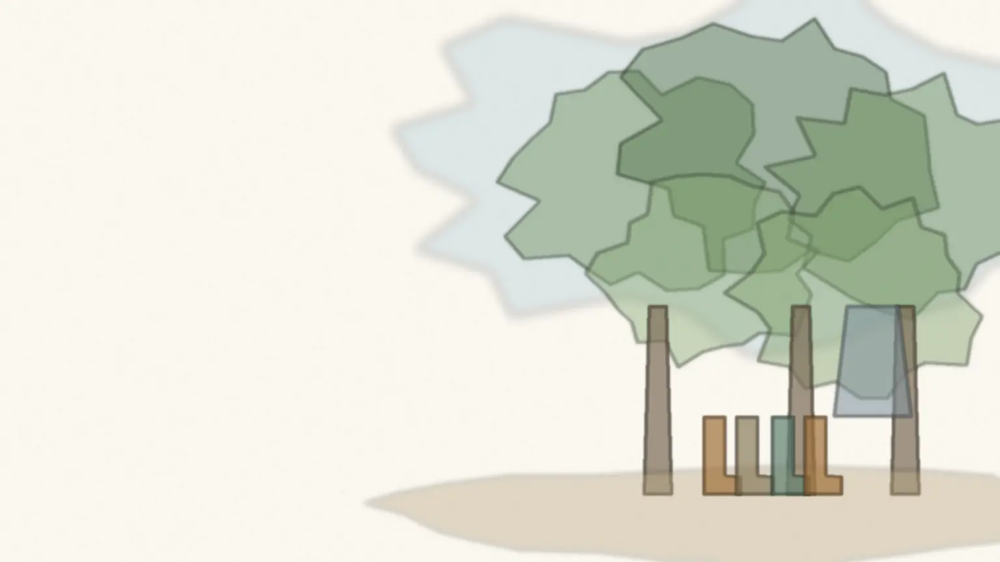
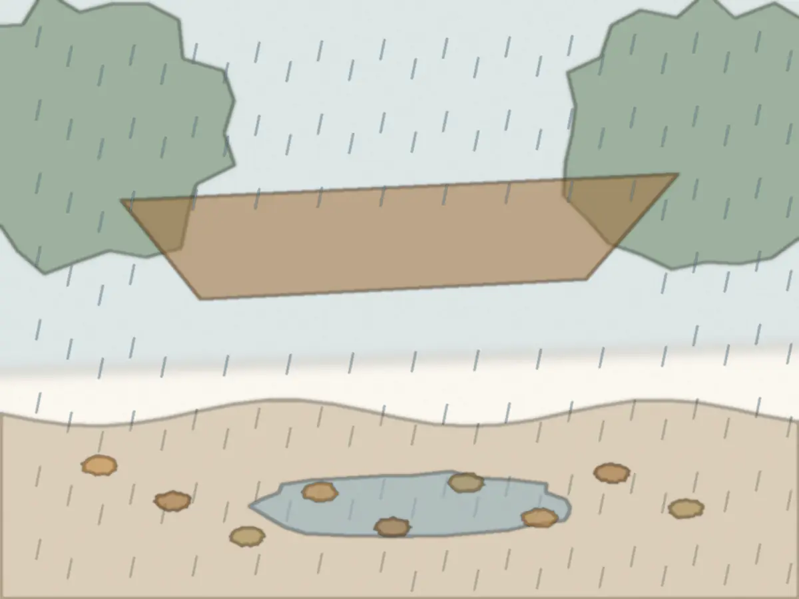
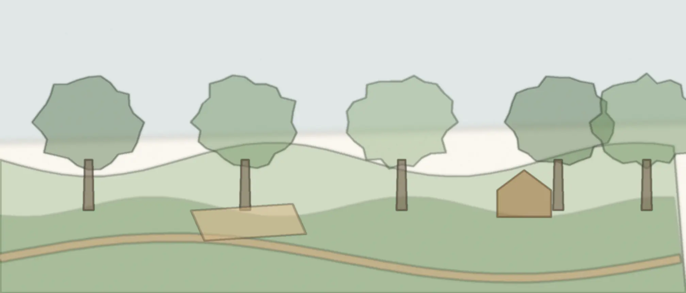
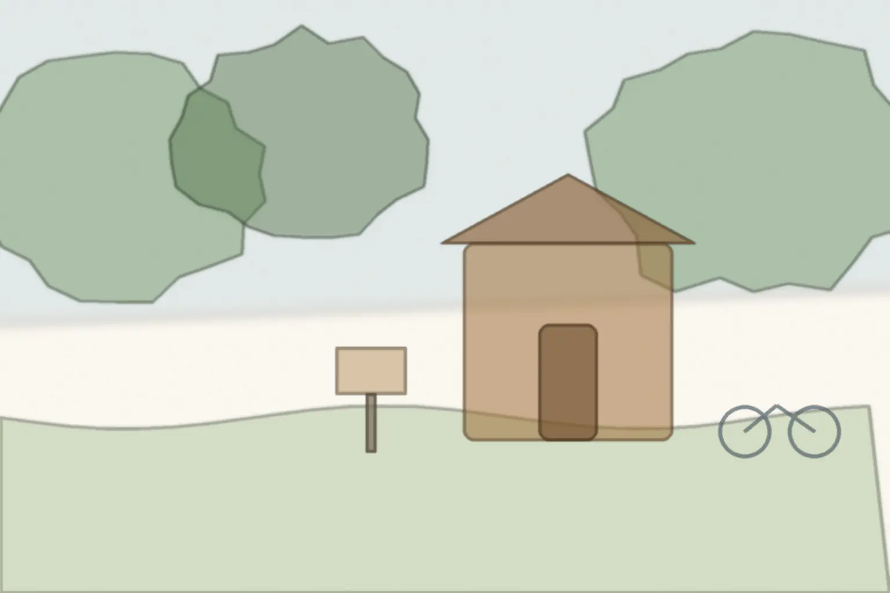

里山のふもとの森で、3〜5歳の子どもと過ごす小さな保育
雨の日も、森で過ごします。

週4日、森の入口の小屋に集まって、歩いて森へ入ります。晴れの日も雨の日も、同じ一日です。保育料42,000円／月（税込）・定員12名
- 見学だけでも大丈夫です
- 入園をすすめるご連絡はしません
- お返事は3日以内（土日を除く）

考え方
濡れることも、森の一日のうちです。
雨の森は、晴れの日とは別の場所になります。葉に落ちる音、水たまりに映る枝、湿った土のにおい。それを「中止の理由」ではなく「その日の森」として、子どもと過ごします。
そのかわり、決めていること
- 森に入らない日
- 雷・大雨・強風の注意報や警報が出ている日は、入口の小屋とその周りで過ごします。
- 見守りの人数
- 子ども6人に大人1人以上。森の中では、いつも大人2人以上でいます。
- 行ってよい範囲
- 水辺と斜面は入ってよい場所を決めて、毎朝、大人が歩いて確かめます。
森の一日
小屋から森へ、森から小屋へ。

時刻ごとの過ごし方と、雨の日に変わること、持ち物と送り迎えは「森の一日」のページにまとめています。
費用
ひと月にかかる費用。
| 費目 | 金額（税込） | 内容 |
|---|---|---|
| 保育料 | 42,000円／月 | 週4日（月・火・木・金）9:00〜14:00 |
| 入園のとき | 12,000円／年1回 | 保険と、森で使う道具の費用 |
| 雨具の貸し出し | 0円 | 子ども用の雨合羽と長靴（サイズは見学の日に） |
含まないもの給食はありません。お弁当を持ってきていただきます。
ほかの費用ここに書いたほかに、毎月の集金はありません。
金額は税込・見本用の架空の設定です。
よくある質問
認可の保育園ですか？
認可外の保育施設です。お住まいの自治体の補助が使えるかどうかは、見学のときに一緒に確かめます。
寒い日や暑い日はどうしますか？
真冬と真夏は、小屋で過ごす時間を長くします。熱中症の注意が出ている日は、森の奥へは入りません。
いま2歳ですが、見学できますか？
来年度から通う予定の2歳のお子さまも、見学できます。申し込みの欄で「2歳（来年度から）」を選んでください。
見学
まずは一度、森を歩いてみてください。
- 今日このページの欄から申し込み用意するもの：お子さまの年齢
- お返事見学の日の候補を、メールでお送りします
- 当日 9:00森の入口の小屋に集合用意するもの：長靴と、汚れてもよい服
- 〜10:001時間ほど、子どもたちと森を歩きます
